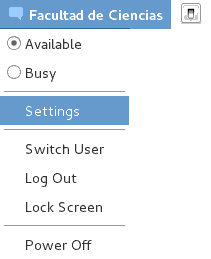
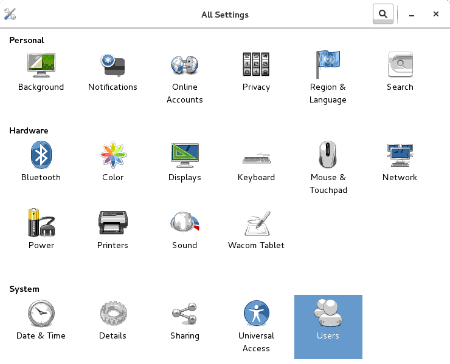

Básico
El alumno conocerá el sistema de control de versiones git y aprenderá el uso de esta herramienta tanto desde línea de comandos, como desde un cliente de escritorio y vía web a través de Github.
Estudiantes, pasantes o egresados de carreras afines a computación, desarrolladores y entusiastas de la programación.
Distribuido
Bitácora de revisiones del proyecto
Ignorar espacios en blanco
Corregir el commit anterior
Documentación en Markdown
Wikis


<Enter> 
prog.c prog1.c prog2.c ... prog<n>.c tarea/prog.c
version_inicial/prog.c
modificado2/prog.c
vers-28sep/prog.c
ProyectoFinal_2017-1_completo(Andres)/prog1.c 


 ⇒
⇒ 
git presenta tres áreas de trabajo, asociadas con los estados que puede tener un archivo.git guarda todas las versiones de los archivos del proyecto
| Estado | Descripción | Comando |
|---|---|---|
| Modified | El archivo fue editado en el directorio de trabajo | editor archivo |
| Staged | El archivo (nuevo o modificado) fue agregado al área de staging | git add archivo |
| Staged | El archivo se movió o renombró utilizando git |
git mv archivo1 archivo2 |
| Staged | El archivo se borró del área de staging utilizando git |
git rm archivo |
| Committed | Los cambios del archivo fueron guardados en el repositorio | git commit archivo |
apt-get o aptituderoot@debian:~# aptitude install gityum[root@centos ~]# yum install gitPara instalar en otras variantes de UNIX ver la documentación oficial
git init$ man git-init
git-init - Create an empty Git repository or reinitialize an existing one
git init [-q | --quiet] [--bare] [--template=<template_directory>]
[--separate-git-dir <git dir>] [--shared[=<permissions>]] [directory]tonejito@linux:~$ mkdir repositorio
tonejito@linux:~$ cd repositorio
tonejito@linux:~/repositorio$ git init
Initialized empty Git repository in /home/tonejito/repositorio/.git/
tonejito@linux:~/repositorio$ ls -lA
total 0
drwxr-xr-x 7 tonejito users 147 Jun 3 17:16 .gitgit inittonejito@linux:~$ git init otro-repo
Initialized empty Git repository in /home/tonejito/otro-repo/.git/
tonejito@linux:~$ ls -lA otro-repo/
total 0
drwxr-xr-x 7 tonejito users 147 Jun 3 17:19 .git--sharedtonejito@linux:~$ git init --shared=group repo-compartido
Initialized empty shared Git repository in /home/tonejito/repo-compartido/.git/
tonejito@linux:~$ chmod -R g+rw repo-compartido/
tonejito@linux:~$ ls -la repo-compartido/
total 4
drwxrwsr-x 3 tonejito users 17 Jun 6 09:50 .
drwxr-xr-x 57 tonejito users 4096 Jun 6 09:50 ..
drwxrwsr-x 7 tonejito users 147 Jun 6 09:50 .gitgit clone para guardar una copia de un repositorio existentePara clonar el repositorio es necesario conocer la URL donde se aloja el proyecto
/path/to/repo.git/file:///path/to/repo.git/http[s]://host.xz[:port]/path/to/repo.git/ftp[s]://host.xz[:port]/path/to/repo.git/ssh://[user@]host.xz[:port]/path/to/repo.git/ssh://[user@]host.xz[:port]/~[user]/path/to/repo.git/git://host.xz[:port]/path/to/repo.git/git://host.xz[:port]/~[user]/path/to/repo.git/[user@]host.xz:path/to/repo.git/[user@]host.xz:/~[user]/path/to/repo.git/
git clone de la siguiente maneratonejito@linux:~$ git clone https://github.com/tonejito/curso-git.git
Cloning into 'curso-git'...
remote: Counting objects: 108, done.
remote: Compressing objects: 100% (42/42), done.
remote: Total 108 (delta 24), reused 0 (delta 0), pack-reused 65
Receiving objects: 100% (108/108), 429.40 KiB | 0 bytes/s, done.
Resolving deltas: 100% (45/45), done.
Checking connectivity... done.curso-git.gittonejito@linux:~$ ls -A curso-git/
.git .gitignore LICENSE.md presentation.md
img index.html Makefile README.mdgit add se utiliza para especificar qué archivos incluirá git en el control de versionesman de git add muestra las opciones de línea de comandosgit-add - Add file contents to the index
git add [-n] [-v] [--force | -f] [--interactive | -i] [--patch | -p]
[--edit | -e] [--[no-]all | --[no-]ignore-removal | [--update | -u]]
[--intent-to-add | -N] [--refresh] [--ignore-errors] [--ignore-missing]
[--] [<pathspec>...]README.md y escribir algún mensaje simple en eltonejito@linux:~/repositorio$ editor README.md# Mi repositorio de git
Andrés Hernándezgit status para revisar si hay cambiostonejito@linux:~/repositorio$ git status
On branch master
Initial commit
Untracked files:
(use "git add <file>..." to include in what will be committed)
README.md
nothing added to commit but untracked files present (use "git add" to track)README.md al repositorio con el comando git addtonejito@linux:~/repositorio$ git add README.mdgit status para revisar si hay cambiosOn branch master
Initial commit
Changes to be committed:
(use "git rm --cached <file>..." to unstage)
new file: README.mdDesapareció el mensaje que sugería utilizar git add (comparar con la lámina anterior)
El cambio aún no está guardado, ver siguiente sección
.git se utiliza el comando git commitman de git commit muestra las opciones de línea de comandosgit-commit - Record changes to the repository
git commit [-a | --interactive | --patch] [-s] [-v] [-u<mode>] [--amend]
[--dry-run] [(-c | -C | --fixup | --squash) <commit>]
[-F <file> | -m <msg>] [--reset-author] [--allow-empty]
[--allow-empty-message] [--no-verify] [-e] [--author=<author>]
[--date=<date>] [--cleanup=<mode>] [--[no-]status]
[-i | -o] [-S[<key-id>]] [--] [<file>...]git committonejito@linux:~/repositorio$ git commit README.md# serán ignoradascommit$GIT_EDITOR, core.editor, $VISUAL o $EDITORCommit inicial del proyecto
+ Se agrega el archivo README.md
# Please enter the commit message for your changes. Lines starting
# with '#' will be ignored, and an empty message aborts the commit.
# Explicit paths specified without -i or -o; assuming --only paths...
# On branch master
#
# Initial commit
#
# Changes to be committed:
# new file: README.md
#| Línea | Elemento | Contenido |
|---|---|---|
| 1 | Título del commit | Descripción breve y concreta del cambio aplicado, menos de 50 caracteres |
| 2 | Línea en blanco | Se utiliza para separar el título del cuerpo |
| 3 | Descripción del commit | Mensaje que explica el cambio aplicado a profundidad |
| … | ✓ | Puede abarcar varias líneas de texto |
| … | ✓ | Es posible insertar elementos de sintáxis de Markdown |
| … | ✓ | Se pueden utilizar listas para enumerar elementos de manera vertical |
git commit y especificar el título del commit en el mismo comandogit logtonejito@linux:~/repositorio$ touch archivo-para-borrar
tonejito@linux:~/repositorio$ git add archivo-para-borrar
tonejito@linux:~/repositorio$ git commit -m "Archivo de prueba para probar git-rm"
tonejito@linux:~/repositorio$ git log -n 1
commit f552622d1a526ed0471ea260e3b99d1cef0c72f3
Author: Andrés Hernández <andres.hernandez@ciencias.unam.mx>
Date: Wed Jun 8 13:52:04 2016 -0500
Archivo vacío para probar git-rmgit rmrm o borrar mediante el navegador de archivos.git se utiliza el comando git rmman de git rm muestra las opciones de línea de comandosgit-rm - Remove files from the working tree and from the index
git rm [-f | --force] [-n] [-r] [--cached] [--ignore-unmatch] [--quiet] [--] <file>...git rm borra el archivo del Directorio de trabajo y marca el cambio en el Área de Stagingtonejito@linux:~/repositorio$ ls -l
total 4
-rw-r--r-- 1 tonejito users 0 Jun 8 13:45 archivo-para-borrar
-rw-r--r-- 1 tonejito users 44 Jun 6 18:01 README.md
tonejito@linux:~/repositorio$ git rm archivo-para-borrar
rm 'archivo-para-borrar'
tonejito@linux:~/repositorio$ git status
On branch master
Changes to be committed:
(use "git reset HEAD <file>..." to unstage)
deleted: archivo-para-borrar.git con git committonejito@linux:~/repositorio$ git commit -m "Prueba de git-rm" archivo-para-borrar
[master 1f6d57a] Prueba de git-rm
1 file changed, 0 insertions(+), 0 deletions(-)
delete mode 100644 archivo-para-borrargit mv se utiliza para mover o renombrar archivos del repositoriomv o renombrar desde el navegador de archivosman de git mv muestra las opciones de línea de comandosgit-mv - Move or rename a file, a directory, or a symlink
git mv [-v] [-f] [-n] [-k] <source> <destination>
git mv [-v] [-f] [-n] [-k] <source> ... <destination directory>tonejito@linux:~/repositorio$ touch archivo-para-mover archivo-para-renombrar
tonejito@linux:~/repositorio$ git add archivo-para-mover archivo-para-renombrar
tonejito@linux:~/repositorio$ git commit -m "Archivos vacíos para prueba de git-rm" archivo-para-*
[master 657aa04] Archivos vacíos para prueba de git-rm
2 files changed, 0 insertions(+), 0 deletions(-)
create mode 100644 archivo-para-mover
create mode 100644 archivo-para-renombrargit mv moviendo un archivo a otro directorio y renombrando otro archivotonejito@linux:~/repositorio$ mkdir -v directorio
mkdir: created directory ‘directorio’
tonejito@linux:~/repositorio$ git mv archivo-para-mover directorio/
tonejito@linux:~/repositorio$ git mv archivo-para-renombrar archivo-con-otro-nombre
tonejito@linux:~/repositorio$ git commit -m "Prueba de git-mv"
[master 4f30937] Prueba de git-mv
2 files changed, 0 insertions(+), 0 deletions(-)
rename archivo-para-renombrar => archivo-con-otro-nombre (100%)
rename archivo-para-mover => directorio/archivo-para-mover (100%)origin y la rama por defecto se llama mastergit remotetonejito@linux:~/repositorio$ git remote add origin https://github.com/tonejito/repositorio.git
tonejito@linux:~/repositorio$ git remote -v
origin https://github.com/tonejito/repositorio.git (fetch)
origin https://github.com/tonejito/repositorio.git (push)git push de la siguiente maneratonejito@linux:~/repositorio$ git push -u origin master
Username for 'https://github.com': tonejito
Password for 'https://tonejito@github.com':
Counting objects: 12, done.
Delta compression using up to 8 threads.
Compressing objects: 100% (8/8), done.
Writing objects: 100% (12/12), 1.35 KiB | 0 bytes/s, done.
Total 12 (delta 1), reused 0 (delta 0)
To https://github.com/tonejito/repositorio.git
* [new branch] master -> master
Branch master set up to track remote branch master from origin.git pushtonejito@linux:~/repositorio$ git push
Username for 'https://github.com': tonejito
Password for 'https://tonejito@github.com':
Counting objects: 3, done.
Delta compression using up to 8 threads.
Compressing objects: 100% (3/3), done.
Writing objects: 100% (3/3), 462 bytes | 0 bytes/s, done.
Total 3 (delta 1), reused 0 (delta 0)
To https://github.com/tonejito/repositorio.git
4f30937..be47c1b master -> masterpush.defaultgit reconoce cuando se realizan cambios en los archivos del Directorio de trabajo.git es necesario ejecutar git commit| Estado del archivo | Comando | Descripción |
|---|---|---|
| Untracked | touch <file> |
Se creó un nuevo archivo en el Directorio de trabajo Aún no se agrega al control de versiones |
| new file | git add <file> |
Se agregó un nuevo archivo para ser versionado |
| deleted | git rm <file> |
El archivo se borró del repositorio |
| renamed | git mv <src> <dst> |
El archivo cambió de nombre o fue movido |
| modified | gedit <file> |
El contenido del archivo fue modificado |
| both modified | :sweat_smile: :gun: :rage: | Es necesario hacer merge :scream: |
git add (ver siguiente sección)tonejito@linux:~/repositorio$ touch archivo-externo
tonejito@linux:~/repositorio$ git status
On branch master
Your branch is up-to-date with 'origin/master'.
Untracked files:
(use "git add <file>..." to include in what will be committed)
archivo-externo
nothing added to commit but untracked files present (use "git add" to track)git add ⇨ new filegit addgit commit para guardar el cambiotonejito@linux:~/repositorio$ git add archivo-nuevo
tonejito@linux:~/repositorio$ git status
On branch master
Changes to be committed:
(use "git reset HEAD <file>..." to unstage)
new file: archivo-nuevogit rm ⇨ deletedgit rmgit commit para guardar el cambiotonejito@linux:~/repositorio$ git rm archivo-para-borrar
rm 'archivo-para-borrar'
tonejito@linux:~/repositorio$ git status
On branch master
Changes to be committed:
(use "git reset HEAD <file>..." to unstage)
deleted: archivo-para-borrargit mv ⇨ renamedgit rmgit commit para guardar el cambiotonejito@linux:~/repositorio$ git mv archivo-para-mover directorio/
tonejito@linux:~/repositorio$ git mv archivo-para-renombrar archivo-con-otro-nombre
tonejito@linux:~/repositorio$ git status
On branch master
Changes to be committed:
(use "git reset HEAD <file>..." to unstage)
renamed: archivo-para-renombrar -> archivo-con-otro-nombre
renamed: archivo-para-mover -> directorio/archivo-para-movergit commit para guardar el cambiogit checkout <archivo>tonejito@linux:~/repositorio$ git status
On branch master
Your branch is up-to-date with 'origin/master'.
Changes not staged for commit:
(use "git add <file>..." to update what will be committed)
(use "git checkout -- <file>..." to discard changes in working directory)
modified: pagina.html
no changes added to commit (use "git add" and/or "git commit -a")git log se utiliza para visualizar la bitácora de revisiones del proyectotonejito@linux:~/repositorio$ git log
commit be47c1b99c212c0b25d7351c1d9bd8de33c06dd8
Author: Andrés Hernández <andres.hernandez@ciencias.unam.mx>
Date: Thu Jun 9 10:53:34 2016 -0500
Página de prueba para `curso-git`
+ Código base `html5` sin estilos
... ... ... ... ... ... más entradas del log ...
commit 1b75a81323d5a6befff5d4ddfd3ad3254914c8da
Author: Andrés Hernández <andres.hernandez@ciencias.unam.mx>
Date: Wed Jun 8 13:46:21 2016 -0500
Commit inicial del proyecto
+ Se agrega el archivo README.md